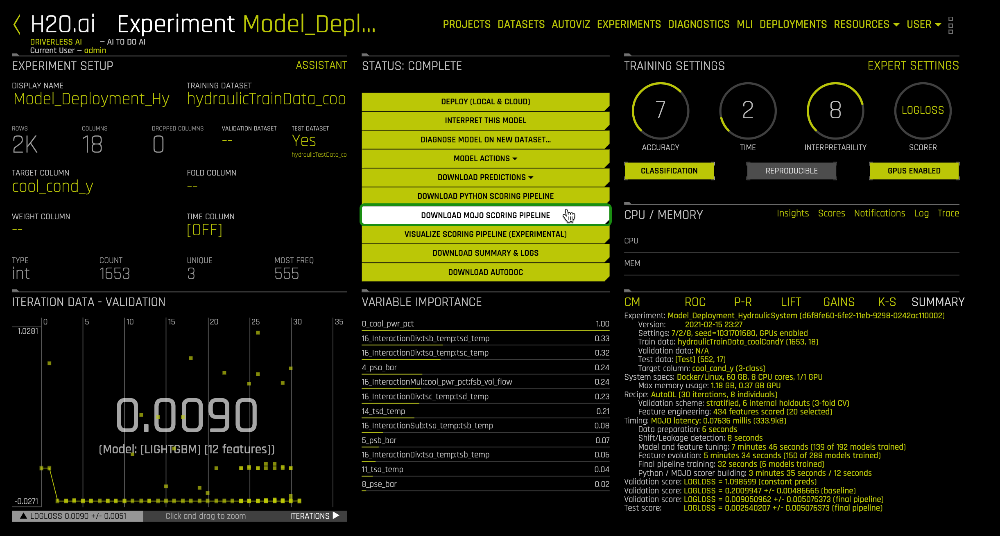
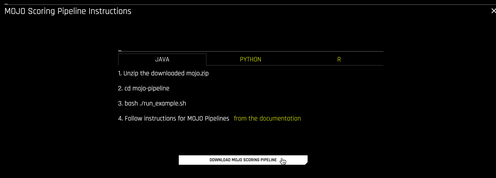
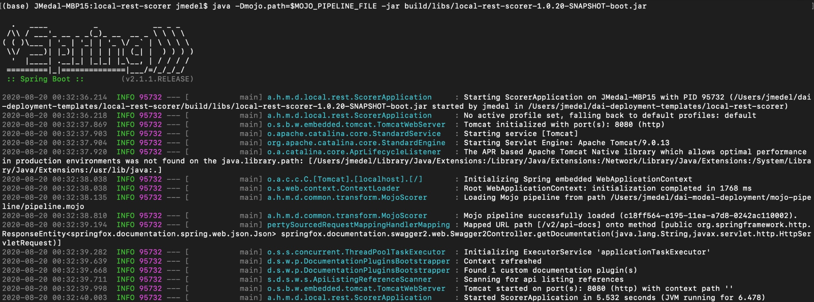
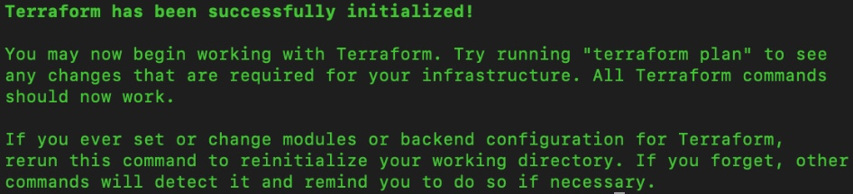

Machine Learning Model Deployment is the process of making your models available in production environments, so they can be used to make predictions for other software systems. Before model deployment, feature engineering occurs in the form of data preparation that later on will be used to train a model. Driverless AI Automatic Machine Learning (AutoML) combines the best feature engineering and one or more machine learning models into a scoring pipeline. The scoring pipeline is used to score or predict data when given new test data. The scoring pipeline comes in two flavors. The first scoring pipeline is a Model Object Optimized (MOJO) Scoring Pipeline, a standalone low-latency model object designed to be easily embeddable in production environments. The second scoring pipeline is a Python Scoring Pipeline, which has a heavy footprint that is all Python and uses the latest libraries of Driverless AI to allow for executing custom scoring recipes.

Figure 1: Hydraulic System Cylinder Diagram
By the end of this self-paced course, you will predict the cooling condition for a Hydraulic System Test Rig by deploying a MOJO Scoring Pipeline into production using Driverless AI's Production Ready Deployment Templates. The Hydraulic System Test Rig data comes from the UCI Machine Learning Repository: Condition Monitoring of Hydraulic Systems Data Set. Hydraulic System Test Rigs are used to test components in Aircraft Equipment, Ministry of Defense, Automotive Applications, and more [1].
Deep Dive and Resources
You will need the following to be able to do this self-paced course:
- Skilled in Java Object Oriented Programming
- Driverless AI Environment on Aquarium with Prebuilt Experiment from Self-Paced Course 4A: Scoring Pipeline Deployment Introduction
- Driverless AI License
- It is needed for using the MOJO2 Java Runtime API to deploy the MOJO Scoring Pipeline to a REST Server or Amazon Lambda
- 21-day trial license or if you need to purchase a Driverless AI license, reach out to our sales team via the contact us form.
- Needed for AWS Lambda Deployment (Optional)
- If you have an Amazon Admin, request access permissions for
- Amazon AWS with IAM Full Access
- Amazon AWS with AWS Lambda Full Access
- Amazon AWS with Amazon API Gateway Administrator
- Amazon AWS with Usage Plans Enabled
- Create an Amazon AWS IAM Access Key and Secret Key
- If you have an Amazon Admin, request access permissions for
- Basic knowledge of Driverless AI or completion of the following self-paced courses:
Create Environment Directory Structure
# Create directory structure for Driverless AI Model Deployment Projects
# Create directory where the mojo-pipeline/ folder will be stored
mkdir $HOME/dai-model-deployment/
Set Up Driverless AI MOJO Requirements
Download MOJO Scoring Pipeline
1. If you have not downloaded the MOJO Scoring Pipeline from the previous self-paced course, consider the following steps:
- Start a new Two-Hour Driverless AI Test Drive session in Aquarium.
- In your Driverless AI instance, click on the Experiments section.
- In the Experiments section, click on the following experiment: Model_deployment_HydraulicSystem
- On the STATUS: COMPLETE section on the experiment page, click DOWNLOAD MOJO SCORING PIPELINE

Figure 2: Driverless AI Experiment Hover on Download MOJO Scoring Pipeline
Note: If you would like to build your own experiment, go to Self-Paced Course 4A: Scoring Pipeline Deployment Introduction, then jump to "Appendix A: Build Experiment" and follow the instructions.
2. Select Java for Java Runtime. Click Download MOJO Scoring Pipeline.

Figure 3: Download Driverless AI Download MOJO Scoring Pipeline
3. Let's copy the mojo.zip file to the dai-model-deployment/ folder and then extract the zip file:
cd $HOME/dai-model-deployment/
cp $HOME/Downloads/mojo.zip .
unzip mojo.zip
rm -rf mojo.zip
You will see a mojo-pipeline folder after the zip file is extracted.
Install MOJO REST Server & AWS Lambda Deployment Dependencies
4. Download and install Anaconda
# Download Anaconda
wget https://repo.anaconda.com/archive/Anaconda3-2020.02-Linux-x86_64.sh
# Install Anaconda
bash Anaconda3-2020.02-Linux-x86_64.sh
Close your terminal and reopen it to activate conda.
5. Create virtual environment and install required packages
conda create -y -n model-deployment python=3.6
conda activate model-deployment
conda install -y -c conda-forge openjdk=8.0.192
conda install -y -c conda-forge maven
conda install -c conda-forge terraform
Specify Driverless AI License via Environment Variable
1. Move your Driverless AI License file to dai-model-deployment/ folder:
cp $HOME/path/to/license.sig $HOME/dai-model-deployment/
2. Set the file path to the Driverless AI License file as a permanent environment variable by placing it inside $HOME/.bash_profile or $HOME/.profile file:
echo "export DRIVERLESS_AI_LICENSE_FILE='$HOME/dai-model-deployment/license.sig'" | tee -a $HOME/.bash_profile
Note: If you purchased Driverless AI, it came with a license key and you will need it for this step.
Deep Dive and Resources
- Driverless AI MOJO Scoring Pipeline - Java Runtime: http://docs.h2o.ai/driverless-ai/latest-stable/docs/userguide/scoring-mojo-scoring-pipeline.html
Driverless AI Deployment Templates are production-ready deployment templates used by Driverless AI to execute Scoring Pipelines in production environments. For example, there are deployment templates for deploying MOJO scoring pipelines to local SpringBoot REST server, Amazon Lambda, Amazon Sagemaker, Google Cloud Run, and SQL database [1]. If there is no deployment template option for your needs, you can build your own template and contribute it back to the Driverless AI Deployment Templates GitHub repository. The repository's build system is Gradle. So, you can use a build system that is compatible with Gradle.
Gradle Build System
Gradle is the main build automation tool used for building the Driverless AI Deployment Templates. Driverless AI leverages the deployment templates from this GitHub repository to deploy scoring pipelines into production [1]. The current deployment templates are written in Java and built for deploying MOJO Scoring Pipelines into the Java Runtime Environment [1]. However, Gradle is capable of building anything [2]. So, for deploying the MOJO Scoring Pipeline into the C++ Runtime Environment, which has Python and R wrappers, you can write a deployment template in either language and use the Python Gradle Plugin and/or R Gradle Plugin to build their template [3, 4]. Likewise, you can build a deployment template for the MOJO Scoring Pipeline in C++ Runtime calling functions from the MOJO C API. You can also build a deployment template in Python for the Python Scoring Pipeline. If you want to contribute your MOJO deployment template to H2O.ai, the recommendation would be to use Gradle or a build system compatible with the current Gradle build system, such as Apache Maven.

Figure 4: Gradle Logo. Image: https://github.com/gradle/gradle
Jenkins
Jenkins is an open-source automation server that we use with Gradle to reliably build, test and deploy the Driverless AI Deployment Templates [5]. The Jenkins pipeline is written in groovy to perform multiple stages that initialize, test, build and publish the production deployment templates as Docker Images to cloud production environments (includes S3, Harbor, and DockerHub). [6]

Figure 5: Jenkins Logo. Image: https://github.com/jenkinsci/jenkins
Java Spring Boot Framework
Java Spring Boot framework is used for creating microservices [7]. Many of the deployment templates leverage Java Spring Boot framework as a REST Server [1]. This server is where the MOJO Scoring Pipeline is executed and ready to make predictions on incoming data coming from a client. Currently, the Spring Boot Server and MOJO are used in the following templates: REST Scorer, Google Cloud Run, Amazon Sagemaker, and REST SQL Scorer [8, 10, 11, 12].

Figure 6: Spring Framework Logo. Image: https://github.com/spring-projects/spring-framework
Terraform to Automate AWS Lambda MOJO Deployment
Terraform is the tool we use to build an Amazon Lambda function by providing AWS a Lambda template that includes our MOJO scoring pipeline [9]. First, we set Terraform variables using permanent or temporary environment variables to instruct Terraform on what to do in AWS. These tasks for Terraform include accessing our AWS IAM account using access key credentials, then choosing an existing s3 bucket in a certain region to store the MOJO [9]. After the non-optional Terraform variables are set, we tell Terraform to publish our Lambda template to Amazon Lambda [9].

Figure 7: Terraform Logo. Image: https://github.com/hashicorp/terraform
REST Server and Client for Machine Learning Predictions
An approach to executing the MOJO Scoring Pipeline or Python Scoring Pipeline is to run it on a REST server. With many Driverless AI Deployment Templates, the MOJO Scoring Pipeline is executed on a Java Spring Boot REST server. When the MOJO is running, we can use it to score data. A client will make an HTTP request using the curl command to trigger the REST server's MOJO to do scoring on his new input data. Once the MOJO has scored the new input data, the REST server will respond to the client's request with the prediction result. If the user passes individual rows of new input data to the REST server, the MOJO will perform real-time scoring. Alternatively, the MOJO will perform batch scoring if the user passes multiple rows of new input data to the REST server.

Figure 8: Server and Client Scoring Request Architecture. Images: https://freesvg.org/
AWS Lambda for Machine Learning Predictions
Another approach to executing the MOJO Scoring Pipeline is to run it on an AWS Lambda function. An AWS Lambda is a serverless compute service that runs code in response to events and automatically manages the underlying compute resources for us [15]. With AWS Lambda, we can upload our MOJO Scoring Pipeline execution code, and AWS Lambda takes care of everything required to run and scale our code with high availability [14]. With AWS Lambda, we are not required to provision or manage servers [14]. The AWS Lambda will automatically scale our application by running code in response to each trigger [14]. With the AWS Lambda, we are only charged for the compute time we consume [14]. So, we are charged for every 100ms our code executes and the number of times our code is triggered [14]. Thus, we are using the MOJO Scoring Pipeline to make predictions at a low operating cost. Appendix A of this self-paced course will show you how to send HTTP requests to the AWS Lambda function to trigger it to automatically execute our MOJO Scoring Pipeline to do real-time scoring and batch scoring.
AWS Lambda vs EC2
Setup & Manage Environment
With an AWS Lambda Driverless AI MOJO scoring pipeline deployment, scaling is fully automated, meaning that you do not need to spin up or provision containers or make them available for your applications [18]. So, you do not need to do much work to set up one or more environments. We need to apply a terraform from our local machine to deploy a Driverless AI MOJO scoring pipeline to an AWS Lambda. On the other hand, with a Driverless AI MOJO scoring pipeline deployment to a REST server running on an AWS EC2 instance, setting up the environment includes logging into the instance via SSH, installing the dependencies for the REST server and MOJO, and doing a git clone on the Driverless AI deployment templates GitHub repository [18]. On the EC2, ideally, you would have it done in a manner that is fully automated and reproducible for this setup process.
Security
AWS Lambda abstracts away the patching and OS manual work, but you need to consider how to secure communication inside and outside your application to avoid surface attacks [18]. Since the number of functions tends to increase, monitoring them becomes a challenge and can result in decaying functions [18]. Vulnerability breaches happening and malicious agents growing over time is likely not to happen due to the stateless characteristic of the functions [18].
With AWS EC2, you must consider the security layer at the instance level, which includes deciding and controlling the traffic allowed to communicate with each instance and dictating the allowed inbound traffic through certain protocols [18]. With AWS EC2, some of these protocols include TCP, UDP, ICMP. Creating policies with correct permissions, especially for a growing team, is a work of trial and error and is tiresome [18]. Similarly, handling permissions for each business needs mean changing policies often and results in unwanted granularity [18]. However, with AWS Lambda, creating policies, handling permissions, working on OS patches, and system maintenance is entirely taken care of by AWS [18].
Performance
Various performance factors can be looked at when comparing AWS Lambda and EC2, including timeout, dependencies, scalability, availability, and latency. First, let's dive into the timeout performance. For AWS Lambda, long-running functions and complex tasks aren't a good fit because the lambda has a timeout of 300 seconds [18]. With AWS Lambda, some timeouts don't come from the 300 seconds limit; some happen due to bugs introduced to the program or when dealing with communication over external servers take too much time [18]. With AWS EC2, it has pretty flexible options, so you can work with long-running tasks since instances are available for different types of requirements with different configurations [18]. However, the AWS EC2 option is not error-free since it does suffer from connection timeout because of overlapping security group rules and unidentified user key by the server, and potentially other timeout issues [18]. So, if your performance factor involves dealing with long-running tasks performing complex processing, which could introduce timeouts, then you should go with AWS EC2 over AWS Lambda since Lambda lags [18].
Cost Comparison
Both AWS Lambda and EC2 offer free tier versions, so they are free. Let's look at the cost comparison for one use case: low/infrequent traffic on a website/app [18]. If we look at the following specifications for the use case regarding the AWS Lambda, let's say we receive 10,000 hits per day over 24 hours and 200ms per hit at 512 GB for execution time [18]. Then, this results in 432,000 requests per month with 2,160 GB-sec of computing per month, and the total cost will be $0.31 per month for the AWS Lambda [18]. On the other hand, the smallest EC2 nano instance will cost ten times more since it runs for 24 hours, causing the cost to be multiplied by 24 [18].
AWS Lambda Cold-Start in Real-Time Request Latency
If you decide to go with AWS Lambda for Driverless AI MOJO scoring pipeline deployment, there are a few factors you should consider with real-time scoring request latency. A low latency network connection results in small delay times, while a high latency suffers from long delays. Low latency for real-time scoring requests would be ideal because it is immediate. Cold starts equal higher latency [16, jarmod]. If you are using multiple layers in AWS for Lambda MOJO deployments like CloudFront, API Gateway, and Lambda, then real-time scoring requests will result in a higher latency [16, jarmod]. The programming language for your Lambda MOJO deployment could impact scoring requests latency, such as using Java will result in the highest cold-start latency. In contrast, Go will result in the lowest cold-start latency [16, jarmod]. Finally, your Lambda environment size impacts the scoring requests latency, such as an environment with more RAM and more CPU will result in faster response time [16, jarmod].
When choosing AWS Lambda for MOJO deployment, cold-start will cause high latency for the scoring request, so applying a pre-warming strategy to your Lambda may be a potential solution to ensuring that your Lambda responds to scoring request results in low latency [16, jarmod]. One issue that may cause the Lambdas not to stay warm is that they are not receiving enough requests per day [16, Quentin Hayot]. For example, if you have a time-critical application in which a user is on the phone and waiting for text-to-speech to answer, it may suffer from the Lambda's high latency response time. One approach to ensuring that the lambdas stay warm is to call them enough using NPM's Serverless WarmUp Plugin so that they don't get cold[16, Quentin Hayot][17].
Deep Dive and Resources
[1] H2O.ai GitHub Repository: Driverless AI Deployment Templates
[2] Gradle Build Tool
[3] LinkedIn GitHub Repository: PyGradle
[4] arekbee GitHub Repository: Gradle R Plugin
[5] Jenkins
[6] H2O.ai GitHub Repository: Driverless AI Deployment Templates - Jenkinsfile
[7] Spring Boot - Introduction
[8] Driverless AI Deployment Template for Local SpringBoot Scorer
[9] Driverless AI Deployment Template for AWS Lambda
[10] Driverless AI Deployment Template for Google Cloud Run
[11] Driverless AI Deployment Template for Sagemaker Hosted Scorer
[12] Driverless AI Deployment Template for Local Rest SQL Scorer
[13] Introduction to Terraform
[14] AWS Lambda Overview
[15] AWS Lambda Features
[16] Stackoverflow: Is AWS Lambda good for real-time API Rest?
[17] NPM: Serverless WarmUp Plugin
[18] AWS Lambda vs EC2: Comparison of AWS Compute Resources
Now that you have some background in scoring pipeline deployment templates let's download the Driverless AI Deployment Template GitHub repo, build the templates using Gradle, and deploy our MOJO scoring pipeline locally and to the cloud.
Download Driverless AI Deployment Templates
1. Go to GitHub repository hyperlink https://github.com/h2oai/dai-deployment-templates

Figure 9: Driverless AI Deployment Templates GitHub
2. Download the dai-deployment-templates to your computer's $HOME folder.
cd $HOME
git clone https://github.com/h2oai/dai-deployment-templates
cd dai-deployment-templates
3. Build the templates using the Gradle build automation tool.
./gradlew distributionZip
You should receive a message that the build completed successfully.
Deep Dive and Resources
Deploy Driverless AI MOJO Scoring Pipeline to REST Server
We just built the local REST scorer template. Now we can run the local scorer. Let's use the direct executable jar approach. The documentation tells us that the local scorer run command needs the path to the pipeline.mojo file. This file resides in the mojo-pipeline folder.
1. Let's provide the path to the pipeline.mojo using a permanent environment variable by adding the export MOJO_PIPELINE_FILE to the $HOME/.bash_profile or $HOME/.profile file.
export MOJO_PIPELINE_FILE="$HOME/dai-model-deployment/mojo-pipeline/pipeline.mojo"
2. Then start the rest scorer.
cd local-rest-scorer
java -Dmojo.path=$MOJO_PIPELINE_FILE -jar build/libs/local-rest-scorer-{version}-SNAPSHOT-boot.jar
You should see the Java SpringBoot server application launching.

Figure 10: Launched SpringBoot Application and Loaded Driverless AI MOJO Scoring Pipeline
The Java SpringBoot server application finished launching. So, now our MOJO scoring pipeline has been loaded on the REST server. It is ready to be sent scoring requests.
3. Create a test.json file with our scoring request payload.
tee -a test.json << EOF
{
"fields": ["psa_bar", "psb_bar", "psc_bar", "psd_bar", "pse_bar", "psf_bar", "fsa_vol_flow", "fsb_vol_flow", "tsa_temp", "tsb_temp", "tsc_temp", "tsd_temp", "pump_eff", "vs_vib", "cool_pwr_pct", "eff_fact_pct"],
"rows": [["155.56646728515625", "104.93318176269531", "0.862698495388031", "0.00021100000594742596", "8.37287425994873", "8.321526527404785", "2.0819649696350098", "8.871089935302734", "35.355934143066406", "40.99454879760742", "38.31908416748047", "30.47344970703125", "2366.707275390625", "0.5243666768074036", "1.3755667209625244", "19.58085060119629"]]
}
EOF
Note: the data in the json scoring request payload comes from one row of Hydraulic System data in the $HOME/dai-model-deployment/mojo-pipeline/example.csv
4. Copy and paste the curl command into your terminal, then run it to request that the REST server's MOJO scoring pipeline computes a prediction for hydraulic cooling condition:
# Request REST Server MOJO do interactive scoring for hydraulic cooling condition
curl \
-X POST \
-H "Content-Type: application/json" \
-d @test.json http://localhost:8080/model/score
You should see the following prediction output for Hydraulic Cooling Condition:

Figure 11: Hydraulic Cooling Condition Classification Results
- cool_cond_y.3 = operates at close to total failure
- cool_cond_y.20 = operates at reduced efficiency
- cool_cond_y.100 = operates at full efficiency
From looking at the classification probabilities in the image above, we can infer whether the Hydraulic Cooler is operating at close to total failure, reduced efficiency or full efficiency.
5. Stop the local REST server by pressing control + C.

Figure 12: Shutting Down SpringBoot Application
6. Go back to the dai-deployment-templates/ folder
cd $HOME/dai-deployment-templates/
Deep Dive and Resources
Deploy Scoring Pipeline for a New Dataset
There are various challenges you could do; you could do something that helps you in your daily life or job. For example, if there is a dataset you are working with, you could reproduce the steps we did above, build a new experiment and deploy your MOJO scoring pipeline to a REST server or Amazon Lambda.
Integrate Scoring Pipeline into Program
Another challenge could be to use the existing MOJO scoring pipeline we deployed. But, instead of using the curl command to score data, integrate the scoring into a Java, Python, R, C++, etc., program using an HTTP client.
Create New Deployment Template to Deploy Scoring Pipeline
Alternatively, you could create a new Driverless AI Deployment Template to deploy the MOJO scoring pipeline to a production environment not yet supported. Currently, there is support for MOJO deployment to a local REST server, Amazon Lambda, Amazon Sagemaker, Google Cloud Run, SQL database. Once you've tested your deployment template, you can contribute it back to the open-source. Or you could try one of the already existing deployment templates we did not cover and deploy the MOJO to that production environment.
- Check out Driverless AI's next self-paced courses on embeddable Scoring Pipeline Deployment where you will learn to deploy MOJO Scoring Pipelines into production in Java Runtime and C++ Runtime using Mojo2 Runtime API:
- Check out Driverless AI's next self-paced course on embedable Scoring Pipeline Deployment where you will learn to deploy Python Scoring Pipelines into production in Python Runtime using h2oai_scoring API:
- Check out these webinars that dive into how to productionize H2O Driverless AI Models:
- Check out these articles on deploying H2O Driverless AI on VMware:
- Check out this article on deploying H2O Driverless AI to Oracle Cloud Infrastructure using Terraform templates:
Note: In this Appendix, we will show you how to deploy the Driverless AI MOJO Scoring Pipeline to Amazon Lambda using a Driverless AI Deployment Template. However, you need your own AWS account to follow along.
We will use the Driverless AI Deployment Template aws-lambda-scorer to deploy the MOJO Scoring Pipeline to Amazon Lambda. This template is powered by AWS API Gateway with Lambda proxy integration and Terraform recipe.
1. Create a new s3 bucket in AWS with default settings and name it h2oai-model-hydraulic-lambda, then click Create.

Figure 13: Create s3 Bucket for AWS Lambda Deployment
2. Go to the aws-lambda-scorer/ folder.
cd aws-lambda-scorer
3. Initialize terraform in the terraform-recipe folder to download all necessary Terraform plugins including the AWS one.
cd terraform-recipe
terraform init

Figure 14: Initialize Terraform
4. In your terminal, set the terraform variables using temporary environment variables.
export TF_VAR_access_key={AWS IAM access key}
export TF_VAR_secret_key={AWS IAM secret access key}
export TF_VAR_region={AWS region; ex: us-west-1}
export TF_VAR_lambda_id=h2oai_model-hydraulic-lambda
export TF_VAR_mojo_path=$MOJO_PIPELINE_FILE
export TF_VAR_license_key={Driverless AI License Key}
export TF_VAR_bucket_name=h2oai-model-hydraulic-lambda
5. Let's launch our Amazon Lambda function and also load our MOJO scoring pipeline on it. Terraform will ask you for confirmation, enter yes.
terraform apply

Figure 15: Apply Terraform to Launch AWS Lambda and Load MOJO Scoring Pipeline
Note: if you run into an error when executing terraform apply, check out Appendix A: Troubleshooting Deployment
Now that our Amazon Lambda function has been launched and our MOJO scoring pipeline has loaded on it, terraform provides us with the api_key and base_url, which we can use for sending score requests.
6. Create a test.json file with our scoring request payload.
tee -a test.json << EOF
{
"fields": ["psa_bar", "psb_bar", "psc_bar", "psd_bar", "pse_bar", "psf_bar", "fsa_vol_flow", "fsb_vol_flow", "tsa_temp", "tsb_temp", "tsc_temp", "tsd_temp", "pump_eff", "vs_vib", "cool_pwr_pct", "eff_fact_pct"],
"rows": [["155.56646728515625", "104.93318176269531", "0.862698495388031", "0.00021100000594742596", "8.37287425994873", "8.321526527404785", "2.0819649696350098", "8.871089935302734", "35.355934143066406", "40.99454879760742", "38.31908416748047", "30.47344970703125", "2366.707275390625", "0.5243666768074036", "1.3755667209625244", "19.58085060119629"]]
}
EOF
7. Copy and paste the curl command into your terminal, then run it to request that the Amazon Lambda's MOJO scoring pipeline computes a prediction for hydraulic cooling condition:
# Request AWS Lambda MOJO do interactive scoring for hydraulic cooling condition
curl \
-X POST \
-d @test.json \
-H "x-api-key: {api-key-returned-by-terraform}" \
{base-url-returned-by-terraform}/score

Figure 16: Hydraulic Cooling Condition Classification Results
- cool_cond_y.3 = operates at close to total failure
- cool_cond_y.20 = operates at reduced efficiency
- cool_cond_y.100 = operates at full efficiency
From looking at the classification probabilities in the image above, we can infer whether the Hydraulic Cooler is operating at close to total failure, reduced efficiency or full efficiency.
Delete Amazon Lambda MOJO Deployment
If you no longer need your Amazon Lambda Driverless AI MOJO Scoring Pipeline deployment, we will walk you through manually cleaning up the remaining components in AWS.
1. Login to your AWS IAM account. Let's go to the s3 bucket service.
2. Go to s3 bucket h2oai-model-hydraulic-lambda, then click it. Click Delete.

Figure 17: Delete s3 Bucket from AWS Lambda Deployment
3. Type the name of the bucket for h2oai-model-hydraulic-lambda to confirm deletion. Then click Confirm.

Figure 18: Confirm s3 Bucket Deletion
4. Next let's go to the Amazon Lambda functions. Search for your Lambda function, h2oai_h2oai_model-hydraulic-lambda. Click on the circle to select it.
5. Click on Actions. Click Delete.

Figure 19: Delete Amazon Lambda Function
6. Next go to API Gateway service. Search for your Gateway API, h2oai_h2oai_model-hydraulic-lambda. Click on the circle to select it.
7. Click Actions, then Delete.

Figure 20: Delete API Gateway
8. Confirm you want to Delete API Gateway. Click Delete.

Figure 21: Confirm Delete API Gateway
9. Go to IAM service and delete the IAM Policy related to our Amazon Lambda.

Figure 22: Delete IAM Policy
10. Confirm you want to delete IAM Policy. Click Delete.

Figure 23: Confirm Delete IAM Policy
11. Go to IAM Roles, search for the IAM Role h2oai_h2oai_model-hydraulic-lambda. Click the checkbox. Then click Delete role.
12. Confirm you want to delete IAM Role. Click Yes, delete.

Figure 24: Delete IAM Role
In our Amazon AWS IAM account, we just deleted the components related to the Amazon Lambda MOJO deployment. The components that we deleted include the Amazon Lambda function, IAM Policy, IAM Role, API Gateway and s3 bucket. The components that should remain are the IAM access key and IAM secret access key.
Deep Dive and Resources
- Driverless AI Deployment Template for AWS Lambda
- Build Your First Serverless Web Application with AWS Lambda
- Build a Serverless Web Application with AWS Lambda, Amazon API Gateway, AWS Amplify, Amazon DynamoDB, and Amazon Cognito
- Driverless AI: Deploying the MOJO Pipeline
- Driverless AI Deployment Template for Local SpringBoot Scorer
- Driverless AI Deployment Template for AWS Lambda
- Spring Boot - Introduction
- Introduction to Terraform
Amazon Labmda
If you receive the following error related to the function call:

Figure 25: Terraform Error in file function call due to invalid UTF-8
With the recent update from Terraform 0.11 to 0.12, file does not accept any file that is not a valid UTF-8. This issue occurs because pipeline.mojo is not a valid UTF-8.
Another error you may run into relates to the file hashing result not being the same for both files:

Figure 26: Terraform Error from hash result of both files being inconsistent
The reason this error occurs is after the hash result for both files is compared, they are different.
So, refer to the file /Users/jmedel/dai-deployment-templates/aws-lambda-scorer/terraform-recipe/main.tf and on line 42, update it to
etag = "${filemd5(var.mojo_path)}"
Similarly, on line 51, update it to
source_code_hash = "${filesha256(var.lambda_zip_path)}"
If line 42 and 51 have already been updated, then you can ignore the above suggestions.
With this update applied, terraform will obtain the file hashing results from both files without requiring UTF-8 to be valid. Also when the hashing result from both files is compared, they should both be equal.